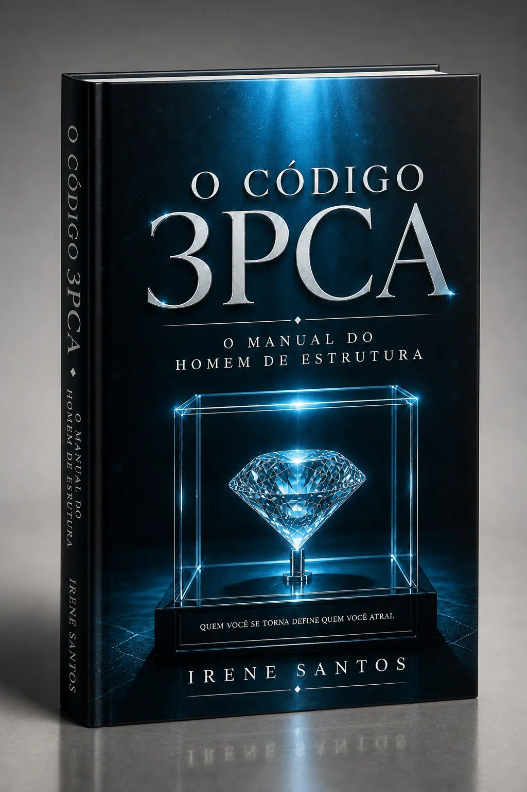

"Quem você se torna define quem você atrai."
Um guia prático e reflexivo desenhado para homens que buscam alinhar maturidade, posicionamento e propósito em suas vidas e relacionamentos.

"Muitas desabam por falta de estrutura."
Em um mundo onde homens são ensinados a reagir às circunstâncias, mas não a sustentar ambientes, O Código 3PCA apresenta uma reflexão profunda sobre maturidade, posicionamento e construção relacional.
Mais do que um livro sobre relacionamentos, este é um chamado à transformação masculina. Com princípios relacionais, reflexões bíblicas e aplicações práticas, a obra mostra que liderança não é controle, proteção não é posse e provisão vai muito além do dinheiro.
"Estruturas fortes não nascem prontas. Elas são construídas. E toda construção começa pelos fundamentos."
Provisão emocional, espiritual e material que vai muito além das finanças.
Proteção com sabedoria, sem confundir cuidado com posse ou controle.
Posicionamento claro para definir o que realmente importa e sustentar valores.
Caminhada lado a lado com maturidade emocional e presença real.
A capacidade de enxergar, honrar e edificar a mulher que caminha ao seu lado.
Disponível em formato digital e versão física impressa entregue em sua casa.
Unindo fé, lógica e rigor analítico para oferecer respostas diretas e soluções sem "floreios".
Irene Santos é cristã, escritora, graduanda em Sistemas de Informação e profissional da área de arquivologia. Com uma carreira consolidada na gestão pública e na organização de fluxos administrativos, ela aplica a visão de sistemas e os princípios inegociáveis do Evangelho ao estudo do comportamento humano.
Utilizando sua cosmovisão cristã para decodificar dinâmicas complexas, desenvolve métodos diretos e objetivos. Em O Código 3PCA, traz um manual biblicamente fundamentado para homens que buscam estruturar relacionamentos com clareza, direção e proteção.